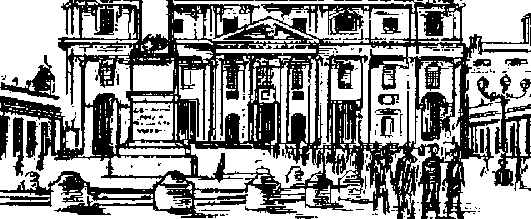

THE LEGION—WATCHDOG OF AMERICAN FREEDOM?
Its history, purpose, and conduct
A Surplus of War Prophets
Some past and present prophecies of earth’s end
Smuggling
An immense world enterprise
Life on the New Earth
Glorious prospects that now comfort men of good will
SEPTEMBER 8, 19SO semimonthly
THE MISSION OF THIS JOURNAL
Newi sources that are able to keep you &wak« to the vital taut* of our times must be unfettered by censorship and selfish interests. "Awake!” has no fetters. It recognizes facts, faces focti, Is tree to puMiSki /actr. It is /Jot bound by pcllifcal junbi drills 4^ Jtls
unhampered by advertisers whose toes must not be trodden on; it is unprejudiced by traditional creeds. This journal keeps itself free that it may speak freely to you. But it does not abuse its freedom. It maintains integrity to truth.
"Awake!” uses the regular news channels, but is net dependent on them. Its own correspondents are on all continents, in scores of nations. From the four corners of the earth their uncensored, on -the-scenes reports come to you through these columns. This journal's viewpoint is not narrow, but li International Zt is read in many natfonj, jrt many languages, by persons of all ages. Through its pages many fields of knowledge pass in review—government, commerce, religion, history, geography, science, social conditions, natural wonders—why, its coverage is os broad as the earth and as high as the heavens.
"Awake I” pledges itself to righteous principles, to exposing hidden foes and subtle dangers, to championing freedom for all, to comforting mourners and strengthening those disheartened by the failures of a delinquent world, reflecting sure hope for the establishment of a righteous New World.
Get acquainted with "Awake!” Keep awake by reading "Awake I”
FCBLISIEED SKUIAin^TULT By WATCHTOWER BIBLE AND TRACT (SOCIETY, INC.
117 Adams Mtrept Uroofc]yD 1, NX J* B. A.
N. Il» PrtJiidtHt BciTEft, .SacrEtfury
Pointing this 810.0QC Flv» c«nti a copy
ta Hlah tNi k
—Enilhhp {hrmn, \|xui-
j Ai'rlli^Fn, T>tr-jl<bi. Vni^, llrtrM. Wirt'-W**. ^edldt, ir>rjdm*£
Scirlj R1hj*
AwM. 11T Adurx & . L, S f. *1
Antrilk, jj Btr*ifjr3 Rd , N-S ff (5*
CuaJt. IC Irwin A* , To^nt* E, frCHrk >j Etglua. Cttutr Ttrat, L&cstaa, W. 2 ft &Htl Afriu, tj’23 Ct|>: Trvf b>
RHrittftitfM bo »i*jt tfl ,4Kw !r >qr r.w-
t’Jf J" cxnpiJitCH with |£ 5 b> jr-nr^rtB
safo iltihrtrj * *?<f r> iqrpud M
Mh4tlyri from owntrlei no oltot h loriVd. >*f Wmtijiftl mocry ofilir ♦>!¥- ^ihKrlptlM rirts in Jiltetm mwtriM *rt here in losl currency. M«Uti (J rttfWii bluJO
B i*at tt t*< “sirs heto'o iUj#cr![<.c^ n
ChMI* •* wtMi Wit tc rd;fl
nifty bv erpA:«d ctftjflhj wittta oce ttrtir. Hind j™- :|jj M at
EnUfrd m ifcaid-clui itittw it Brx4!jn, 5. Y. fJt if Mizcb S, Prlnuri U V. fl. A.
CONT
ENTS
The Legion—
Watchdog of American Freedom? 3
With the PiJgrims at the Vatican
Calling the Prophets to Account
Smuggling^an Immense
When Man Upsets Nature's Balance
Effect of Killing Predators lAvo Die in Legion Lemonsfnififon £1Your Word Is Truth’' Life on the New E^rth
Can ad as Greatest Flood Catastrophe Watching the World
“Now it is high time to awake.”—Romans 13:11 9J
Volume XXXI Brooklyn, N. Y>, September 8, 1950 Number 17
Suddenly through the door to charged a group of American V ^^legionnaires. Shoving the club chairman aside the leader of the intruders delivered an ultimatum, asserting that all those present were classed as “subversive” and that the legionnaires would give them just ten minutes to disperse. “We will not warn you again,” was the final threat That occurred at an open meeting of a La Crescenta, California, democratic club being held in a private home. Across the country, in Monroe, Michigan, steel workers went on strike when their union failed to be recognized as bargaining agent Immediately steeltown legionnaires scrambled for their baseball bats and night sticks and marched against the strikers. In San Francisco a Negro, Edgar Brown by name, director of the National Council of Negro Veterans, was beaten as he and his associates marched in front of the Legion's convention hall petitioning the Legion to open its membership to Negro war veterans on the basis of “equality of sacrifice”. In Richwood, West Virginia, American legionnaires and their agents forced nine ministers of the gospel to drink castor oil and thereupon bound them with rope and herded them through the streets amid the vilifying jeers of a howling mob. In Duncan, Oklahoma, a convention of Christians assembled in a public school to hear a public Bible lecture was violently invaded by a flag-waving mob of 100, with American legionnaires notably predominating.
On a hundred fronts over thirty years, the Legion, though it endorses “100-percent Americanism” in its constitution and singles itself out as the “watchdog” of American freedom, has in unquestionably un-American style repeatedly violated the constitutional rights and privileges of other Americans.
On viewing Legion indignities on one hand, and on the other listening to the vociferous cries of the Legion for Americanism, law and order, freedom of speech, worship, etc., the honest observer queries: Is the Legion a faithful watchdog of freedom, safeguarding the principles of freedom impressively outlined in the American Legion constitution, namely: “To uphold and defend the Constitution of the United States; to maintain law and order; , . . to combat the autocracy of both the classes and masses; to make right the master of might; to promote peace and good will on earth; to safeguard and transmit to posterity the principles of justice, freedom and democracy”? Or, has the Legion proved to be a barking dog that won't bite in the interests of freedom, but, rather, obsequiously wags the tail of friendliness to an unseen master and serves him well
in an attack on the very principles so nobly set forth in the preamble of the Legion constitution? The answer is to be found, not by investigating the three million-odd members who have joined the Legion because they want to "belong” to something and see in the Legion a powerful organization in position to obtain some of the benefits they desire, but by scrutinizing Legion leaders and their thirtyyear record. Bear in mind: The rank-and-file legionnaire obeys; he takes orders.
Haw It All Started
“Who started the American Legion? Nobody, and everybody.” Thus begins one of the many official and semiofficial histories which narrate the Legion story. While convalescing at a United States base hospital in France in 1918, Lieutenant Colonel Theodore Roosevelt, Jr., and a Sergeant William Patterson struck upon the idea of organizing "a veterans' association for the good of the country”. Later Patterson was killed in action, but Roosevelt continued to nurture the “veterans’ association” idea until such time as he had opportunity to present it. He was afforded that chance when top army brass ordered young Roosevelt and nineteen other officers to Paris, there to consider ways and means of boosting army morale, which was at a low ebb following World War I.
The story has it that on the evening of February 16, 1919, Teddy, Jr., invited his fellow conferees to dine with him at the Allied Officers’ Club, Paris. All accepted. And it was at that historic dinner that Roosevelt’s legion idea was first introduced, accepted, and became a plan-in-being, as arrangements were started for a "caucus” in Paris, March 15, 1919, and plans laid for Lieutenant Colonel Roosevelt’s return to the United States to promote the creation there. Such were the birth pains of the American Legion— according to Legion authorities.
.What Legion histories do not generally reveal and what the average legionnaire does not know is that on March 5, 1915— at least two years before there was such a thing as a United States World War veteran, three years before Roosevelt and Patterson “chanced” upon the idea of a veterans* association and four years before the idea was introduced at the famous Paris dinner—a membership organization, reportedly a pressure group to force the United States into World War I, was incorporated in New York county and called American Legion, Inc. While it is true that earlier groups adopted titles bearing the term "American Legion” in one form or another, the distinguishing feature of the 1915 Legion is that Theodore Roosevelt, Jr,, was one of its incorporators and directors!
Other notable members of the 1915 Legion were William J, Donovan, David M. Goodrich, Ogden Mills and James A. Drain. Notable? Yes, for Donovan, Goodrich and Mills were also among the twenty officers to whom Teddy, Jr., supposedly first broached the idea of a legion! As for Drain, he became the seventh national commander of the new 1919 Legion.
Obviously the 1919 American Legion was no mere spontaneous happening.
Who Are the “Friends”?
It takes money to run an organization, and the American Legion, being no exception, borrowed $257,000 for initial expenses from “400 individuals in 13 states”. Who were the 400 individuals? you ask. Legion comptroller Glenn Crawford proffered the evasive answer: “Friends of the Legion, of course.” But what are the names of these “friends”? Since the Legion’s inception this has been the oft-repeated question of newspaper editors, the army paper Stars and Stripes, congressmen, veterans’ organizations and many others, but never in Legion history have these names been released.
Instead, the Legion has offered an indirect and deceptive answer in the form of an invitation, which appeared in Richard Seelye Jones’ book, A History of the American Legion, to wit: “The whole list was carefully preserved after the notes were paid, and remained subject to inspection at National Headquarters by anyone.” Justin Gray, author and formerly assistant director of the Legion’s Americanism Commission, accepted the invitation and wrote the national adjutant requesting the names. Shortly a reply was received wherein the Legion official referred Gray—believe it or not—to Richard S. Jones’ book, the same book in which invitation to inspect the names appears!
Beware lest you think the watchdog was chasing its own tail, for evidently the Legion had no intention of publicizing this list of financial backers. However, the “iron curtain” surrounding the generous Legion sponsors is not entirely impregnable. The facts, though belittled and suppressed but never successfully denied, fairly scream the words reactionary big business boys! What are these facts?
Where the Money Came From
Nearly one-half of the original sum, $125,000, was provided by one Grayson M.-P. Murphy, director of Guaranty Trust (a Morgan bank), Anaconda Copper, Goodyear Rubber and Bethlehem Steel, decorated by Mussolini and made a commander of the Crown of Italy. Additional funds were collected from the big moneyed enterprises, such as the Chicago packing interests.
Further light on big business backing was shed January 4, 1950, when National Commander George N. Craig showered words of praise on Legionism’s “staunch friend” and “American patriot”, William
Randolph Hearst. Said Craig, according to the New York Daily Mirror:
“We of the Legion know that the support of Mr. Hearst and his newspapers has been a mighty contributing factor in making our organization the great one that it is today.
“Old-timers in the Legion tell me that our leaders went to Mr. Hearst when our organization was founded and told him of •, our program for the true principles and doctrines of Americanism. He promised that, if we maintained that program, he would always support us. He has done so in a fine and generous manner.”
In passing, we might ask why National Commander Craig did not mention that William Randolph Hearst was Adolph Hitler’s good friend and admirer, and has always been the bedfellow of war-mongering fascism and against American freedom? And further, what brand of “principles and doctrines of Americanism” has Hearst supported in a “generous manner”?
If you now wonder whether the early Legion organizers were themselves identified with the financial interests, the business connections of these men should prove illuminating. Theodore Roosevelt, Jr., was vice-president of Doubleday, Doran, publishers; director of American Express Company; and connected with Chase National Bank. Franklin D’Olier held office as president and director of Prudential Life, director of Chase National Bank, Pennnsylvania Railroad, National Biscuit Company, and American Bank Company. David M. Goodrich, chairman of the board of the B. F. Goodrich Company, was high in the inner clique of the National Association of Manufacturers. Francis Appleton, Waltham Watch Company executive, was director of two banks. On and on the list goes to include such men as millionaire Chicago lawyer Milton J, Foreman; Nashville banker Luke Lea, eventually sent to
prison for fraud; and Thomas W. Miller, first Legion lobbyist in Washington, who went to the penitentiary for conspiracy to defraud the government.
From the very start big business has had its lackeys in there pitching in its behalf, with the National Association of Manufacturers making the big play. NAM is a strong profiteering outfit shown by congressional investigations to have bribed government employees, paid certain congressmen for "services performed”, employed labor spies, stool pigeons and industrial munitions to fight unionism, propagandized every source of public information and betrayed itself as being an enemy of small business while endeavoring to hide behind the cloak of “free enterprise” and “American initiative”. NAM-Legion cooperation has been clearly seen through the years, and this coordinating committee has proved to be a source of large sums of money to finance Legion activities, and in return the Legion serves as the propagandizing instrument of NAM gospel.
If there is any doubt as to the Legion’s being in harness to big business, with NAM walking the dog, consider the “Royal Family”, as the Legion’s ruling clique is termed. With but rare exceptions they are corporation and industrial giants and NAM men, like their predecessors Theodore Roosevelt, Jr,, Franklin D’Olier and the others. Of note is the fact that in the family tree of national commanders there are only three exceptions to this rule! The ‘‘king-makers”, as the policy-makers of the Legion are called, and the financial-backing dandies make very certain that only the right men, those of their stripe and ideals, attain to the various positions on the ruling roost of Legion politics.
Purpose
With the evidence painting an accurate picture of the Legion bowing to the whims of big business, are we to gulUbly believe that the Legion’s purpose wa^ and is "to combat autocracy of both the classes and masses; to make right the master of might; to promote peace and good will on earth; to safeguard . . . the principles of justice, freedom and democracy”? Or, shall we conclude that the American Legion was organized for the damaging use of a powerful few? Let us sound out the matter.
The Legion’s “open sesame” to the gold-lined pocketbooks of the Chicago packing interests and undoubtedly the other big business backers was exposed by a letter on Swift and Company stationery, soliciting funds, which said: “We are all interested in the Legion, the results it will obtain, and the ultimate effect in helping to offset radicalism.”
“Radicalism,” like “Americanism", is a matter of definition. To the Legionbacking moneyed interests following World War I, radicalism was the idealistic desire of all American soldiers for “A New World” and “A New Deal for Everybody", promised by Lloyd George, or the “Industrial Democracy", advocated by Wilson, or “A Land Fit for Heroes”, promised by victorious statesmen the world over. Johnny Doughboy had fought a bitter battle, and now he was restless, he wanted to go home to higher wages, a better standard of living, a truer democracy, and all the things he had been promised. Indeed, big business had cause for concern about “the postwar attitude of the average soldier toward extreme political radicalism”, for it meant reform that big business could not afford. "A safe and sound organization of veterans might be the best insurance against” the spread of this “radicalism”, they reasoned. Thus the American Legion was formed, and a label marked “Bolshevism” was slapped on the high liberal ideals of
the returning veterans, as well aa on dangerous Bolshevistic doctrine.
Through the years the Legion continued to tread the reactionary road, and following devastating World War H the alarming cry of radicalism again came gushing from the mouths of the Legion hierarchy. At Fort Bragg, North Carolina, before 80,000 soldiers, former National Commander Roane Waring blustered: “There will be more freak isms, more Utopian crackpots, social politicians and longhaired reformers, prophets and demagogues, who will trot out their schemes for bringing on the Millennium. . . . Your job will be to fight them to the last ditch/’ The danger of social reform again threatened to loosen the reactionary grip of big business, and the watchdog Legion came charging to the rescue branding anything and anybody contrary to the policies and practices of the “Royal Family” and its unseen masters “radical” and “communist”, the vilest words m Legion vocabulary. This has resulted in unjust slander and violence to innocent groups and persons who desire to exercise their constitutional freedoms and who have no connections with godless communism whatever.
Americanism a la Legion
The dirt of witch-hunting and red-baiting in favor of the moneyed interests has been skillfully swept under the red, white and blue carpet of “100-perecnt Americanism”, with the late Homer Chaillaux, director of Legionism’s Americanism Commission, and his disciples adeptly manipulating the broom. Every year the Legion convention resolves that “Americanism is the primary activity of the Legion” and that it is “to vigilantly combat communism”. While on the surface this appears to be a very worthy aim, we are reminded that communism does not compose the entire totalitarian picture.. During the past thirty years why has not the Legion come out actively against foreign and native fascism and nazism as it has done so-called “radicalism” and communism?
Perhaps we can understand when we recall that the Legion frequently rubs elbows with fascism and has cast an approving smile in its direction. Consider: Alvin Owsley, one of the early national commanders, proclaimed: “If ever needed the American Legion stands ready to protect our . . . institutions ... as the Fascist! dealt with the destructionists who menaced Italy! The Legion would not hesitate to take things into its own hands—to fight the ‘reds’ as the Fascist! of Italy fought them. Do not forget that the Fascisti are to Italy what the American Legion is to the United States.” At the convention which elected Owsley, the Legion went on record by inviting Mussolini to make the principal address’
In 1931, Ralph T. O’Neill, national commander, presented Italy’s fascist ambassador with resolutions passed by the “Royal Family” favoring Mussolini! In 1935, the year fascist Italy raped Ethiopia, national vice-commander William E. Easterwood invited Mussolini to the Chicago convention, bestowed an honorary membership to the American Legion on il Duce and pinned a Legion button on him. (This action was later declared unconstitutional, since the Legion has no honorary members.) Even more revealing is the suppressed McCormack-Dickstein congressional committee investigation, at which General Smedley Butler, former commander of the U. S. Marines, exposed a plot by top strata Legion brass and Wall Street brokers to raise an army of several thousand legionnaires and march on Washington for the purpose of establishing a fascist regime!
However, the apex of this strange brand of "Americanism" is the incitement of decent men who come under Legion influence to engage in vigilante tactics and mob violence, the type of un-Americanjsm which makes thinking legionnaires blush in shame. Seldom if ever has the National Executive Committee (Legion hierarchy in Indianapolis) exercised its power to suspend or expel a member for "conduct unbecoming to a Legionnaire”, when this self-appointed, free-booting militia has been guilty of mobbing unpopular meetings or persons, such as Jehovah’s witnesses, and denying citizens the very crux of genuine Americanism—free assembly and speech, guaranteed by the Constitution of the United States.
Rather than reprimand such un-American tactics, the men in the imposing gray building in Indianapolis have actually condoned and encouraged it by issuing such directives as this one: "When any of them (organizations reported to be either communist or sympathetic to the communist program) announce meetings in your city or community . . . the . . , Americanism Commission will be pleased to give you information ... on their history.” The legionnaires are commanded to spot and counter such organizations, but in doing so they were warned not to wear Legion insignia. In other words, "Give ’em the business, boys. But don’t let the Legion be blamed!"
Professor William Gellerman of Northwestern University, authority on Legion activity and a member himself, summed up the matter in a doctoral thesis submitted to Columbia Teachers College: "The American Legion stands, in effect, opposed to such American ideals of democracy, civil liberties and equality of opportunity.” It is "fascistic, unpatriotic and a tool of privileged classes". "In the American Legion program of suppression (of constitutional freedoms, minorities, etc.) we see Fascism in its incipient states."
A Watchdog—but for Whom?
The burden of proof is against the American Legion as being the faithful watchdog of American freedom. The Legion cannot point to its ostensible record of. good deeds for justification. Damage wrought on account of its devouring hatred for those who exercise true freedom far offsets the fruits of good works. Nor can the Legion seek vindication in its record of administering "law and order” by indulging in mob action and depriving other American citizens of their constitutional rights. Such action displays contempt for the flag the Legion ostentatiously waves, scorn for the Constitution it is avowed to uphold, and disdain for the government the Legion claims to defend. The actions of the American Legion level the accusing finger of guilt against it and identify it as the fascistic watchdog of big business and reaction.
There are undoubtedly many honest and sincere men and women within the ranks of the American Legion who fervently believe that the Legion can be reformed to operate in the interests of real Americanism and the common good of the country. But we are reminded of the ancient adage: You can’t teach an old dog new tricks. There is but one organization that will bring the benefits and blessings for which honest men of good will have vainly searched for centuries, and that is Jehovah’s organization, his kingdom by Christ, the Commander -to the people. That kingdom will not kowtow to the evil influences of scheming men who prey on the freedoms of the people, but will forever obliterate such and all those who bow the knee in servitude thereto. Jehovah’s new world of righteousness alone will insure for eternity the rights and privileges of all men.
out in order to actually pay with the
I ‘treasure’ of the Church the price of
By "Awake!” correspondent in Italy
WHAT do “holy year” pilgrims to Rome see and do at the largest church in the world, St. Peter’s Basilica? What ritual or worship do they there fulfill as the objective of their pilgrimage? Optimistic estimates set the number of persons who will visit the “Eternal City” this year at three to five million; their total expenses at well over 200 million dollars. For so many to be so willing to spend so much to journey to one city makes the event of more than commonplace interest. Therefore those who cannot afford to go, as well as those who have no desire or purpose in going, will want to know what happens at the Vatican when the pilgrims arrive.
A little background first. To appreciate what takes place, it is well to know the purpose of the “Jubilee Year”. In substance it is “a plenary indulgence, more solemn than the others, with the addition of several facilitations for the absolution of certain sins and from certain serious excommunications. The merits of Christ, the Virgin Mary and the Saints constitute a kind of immense ‘treasure’ upon which the Church has the power to draw, distributing to repentant sinners a portion of the infinite merits of the blessed. From that spiritual strongbox indulgences are drawn
temporal punishment, or purgatory, UyT- which in Catholic theology each of the faithful must account for, even though after confession he has been I | absolved from eternal punishment. To Tj give greater importance to the Jubilee indulgence, during the Holy Year —except for rare exceptions—all other indulgences whether plenary or partial, for the living or the dead, remain suspended everywhere”. (From Oggi, Rome, December 29, 1949) According to this, it would seem that primarily in Rome are indulgences to be dispensed this year, but those dispensed are plenary, i.e., cover all sins.
And now to St. Peter's. The spacious St. Peter’s Square is encircled by quadruple colonnades topped by 140 statues of the “saints”, and rising from its center is a rose-col or cd Egyptian obelisk brought by Caligula (A.D, 37-41) from the pagan Temple of the Sun at Heliopolis to adorn that emperor’s Circus (completed by Nero), and which was removed centuries later by Pope Sixtus V to its present position before Christendom’s largest temple. Supervising priests hustle the throng into an orderly arrangement, each caring for his own group, until finally a lengthy procession has been formed and is moving up toward the Basilica and its “holy door”.
Prayer Ritual
Slowly, the dark-colored file of pilgrims advances with six or seven abreast, the long procession stretching out until it reaches from the obelisk right up to the facade of St. Peter’s Basilica. Walking alongside the moving column every fifty feet is a priest,
book opened in hand before him as he calls out, "SanfAgata!11 loudly enough for all in his section to hear. In measured unison, voices drawn out and toneless, the pilgrims respond: “Ora pro nobis.11 (Latin, meaning “Pray for us”.) Without a second's interval again the priest’s voice is heard: “BanfAgnese!" The people: "Ora ■ pro nobis/1 Another saint’s name, another singsong response, and so on up till the “holy door” is reached and a great number of "saints” canonized by the Catholic Church have been entreated to pray for the host of pilgrims preparing to pass through the sacred portals.
The "Holy Door1’
Before describing what now takes place, a word or two about the door itself. It is located at the far right of the portico designed by the famous sculptor Bernini and leads from this portico into the Basilica proper. Generally it is cemented shut, but at the start of each “holy year” the cement is chipped away to permit the opening of the door. Then at the close of the year it is once again sealed shut until the next “Jubilee”. The door was ordered made by Pope Boniface VIII, who instituted the “holy year” celebration in A.D. 1300. He decreed that the door was to be opened every 100 years, but, even before the first 100 years had passed, two other popes desirous of marking their reigns with the pomp and ceremony of a “holy year” celebration shortened the interval of time. Thus Clement VI, who was pope from 1342-1352, reduced the intervening time to 50 years and accordingly wangled himself a “holy year", while Pope Urban VI (1378-1389) abbreviated it to 33 years to feather his cap with one. Finally Pope Paul n limited the interval to 25 years, all of which makes an honest fellow ponder whether popedom is truly infallible—or changes according to its own
best interests during a given period of time.
Back now to the procession of the pilgrims. The leading priest kneels on the steps before the threshold of the door makes the sign of the cross, rises and kisses a cross engraved in the stone at the left. Those following him do much the same, kneeling, crossing themselves and entering. Inside, the cleric leads the dock toward the center aisle that extends from the enormous bronze main door straight through the middle of the magnificent edifice to the “Shrine of St. Peter”, a crypt in which the Catholic Church claims the apostle Peter was buried. Above this is erected a singular altar at which only the pope may celebrate mass. Its four great spiral columns as well as the ponderous canopy above are made of bronze stripped from the Pantheon, once a pagan temple, now a church. Beyond is the apse in the end of the church containing four gigantic statues of “church fathers” Athanasius, Chrysostom, Ambrose and Augustine, who are shown supporting an unoccupied bronze throne over which gilded angels hold in position a large tiara as though to place it on the head of anyone sitting on the throne. A dove set in the stained glass windows above and beyond the tiara is intended to represent the spirit’s descent upon “St. Peter’s throne”.
Statue Worship
The visitor’s attention is drawn to the black metal statue of “St. Peter” by the wall to the right. A curious spectacle is taking place. Leading up to the image is a line of worshipers who keep moving forward gradually, passing before the statue in single file and—of all things!—pressing their lips against the cold, unyielding metal of its right foot. Often does one hear of this being done, but now to actually see it! A glance at a watch shows that a full thirty persons kiss the toe every sixty seconds, minute after minute. In an hour, 1,800 persons will have kissed it! A closer examination shows that the toes are about fully consumed and the entire foot worn smooth and round, polished slate gray from centuries of caresses by soft human flesh—so it is claimed.
But why? and how can they do such a thing? one asks as he watches. Persons of elegant bearing and appearance, especially the men, seem to sense the unnaturalness of the act and bestow their kiss almost furtively, self-consciously, followed by a rapid movement of the hand in making the sign of the cross. Some of these, showing refinement, place a hand upon the well-worn foot and bend to kiss the back of their fingers, thus avoiding actual lipcontact with the same unhygienic surface already brushed by countless mouths. Still others merely caress the foot with a hand and bring the latter to their lips to be kissed. The majority seem to osculate with a half-curious demeanor, as though wondering what magic feeling would result from the sacred contact, while a brown-frocked friar, tonsure neatly encircled by a tufty rim of hair, clasps the upper part of the foot and with slow, meditative movements purses his lips tenderly against the image. Mothers lift their infants high enough for them to grasp the foot in tiny, eager fingers and impetuously buss its metal with innocent awe, their childish delight sobered somewhat by the solemn deportment of the grownups about them.
A quick reference to a modern guidebook reveals that the origin of this statue is not definitely known—or else not admitted* Some guidebooks state that “according to tradition” the image was “cast by order of St. Leo the Great in memory of the driving away of Attila” in the fifth century, or else “according to art critics it was produced in the 13th or 14th century”. To show the wide possibilities of its origin, however, note the comment found in R, C* Wyndham’s Practical Guide to the Principal Sights of Rome: “The statue was originally that of Jupiter in the Temple of Jupiter Capitolinus, but has been converted to a holier purpose by the Pope.” Whatever may be its origin, there is no room for doubt as to what would be Peter’s attitude toward the toe-kissing ceremony of this supposed image of him in view of what he said with unmistakable clarity to an Italian soldier who had prostrated himself before the humble fisherman-apostle. Said Peter: “Arise, I myself also am a man.” (See Acts 10:25, 26, Douay.)
Creature Worship
Meanwhile the pilgrims in the procession, having finished their devotions and having marched through the immense corridors of the Basilica singing, are now conducted outside. Their solemnity kindles into excitement as the word passes from mouth to mouth that they are to see the “Holy Father” Pius XII, himself, and receive his blessing. Past the gaily costumed Swiss Guard that constantly patrols the entrances into Vatican City swarm 18,000 people bent on seeing the pope. Some twenty minutes later the human tide has swirled into the Cortile of St. Damaso and filled its every angle.
Voices in unison cry out: “Viva! [pause] Viva! [pause] Viva rwa viva! Viva il papa!” In one part of the courtyard a group begins a religious hymn of adoration to the “Virgin Mary”. There by the wall is a dark-skinned Italian woman complacently breast-feeding her baby. The excitement and heat overcome an elderly lady and she is carried into a doorway near at hand* Twenty minutes have gone by. More shouts for the pontiff’s appearance uncover the growing impatience of the multitude, who must remain standing in close quarters for lack of space. Forty
minutes have passed. Some can wait no longer and start walking back.
About an hour later the crowd catohes sight of lances of the Noble Guard through the many-windowed facade of the building enclosing the courtyard- The din mounts quickly. French windows are pulled open giving access to a scarlet-draped balcony, and while the frenzied cheers, applause and shouting reach their crescendo, the thin, white-clad figure of the pope emerges onto the balcony accompanied by several church dignitaries. One of these takes the white cape off the pontiff's shoulders as the latter moves his arms up and down before him in salute to the masses below. He waves in every direction to neglect no one. After three minutes of this, a sudden change takes place as the pope spreads his arms out widely to either side and turns'his countenance toward the sky. The assemblage hushes. Slowly, while all eyes are fixed upon him, the pontiff’s arms describe a wide arc—as though calling a blessing down from above—and his palms meet at his chest. Then it happens. Making the characteristic papal gesture with his fingers, Eugenio Pacelli motions first to his left, then precisely to the center and lastly to his right to include all his subjects below in the blessing thus bestowed. Then he turns and makes his exit. Not a word has he spoken to them.
Reflections on Visit
These are but a few of the scenes likely to meet the pilgrim visitor to Rome this year. He may be impressed by the grandebr, the wealth and the antiquity of this center of Roman Catholicism. He may reflect upon the huge sums of money needed to build and maintain its costly structures, or puzzle over the vast riches concentrated tn golden, jewel-studded religious objects, vestments and works of art, while right in the city of Rome itself squalid misery is warping the lives of many. Considering this unused wealth in the midst of want, he may remember the words of the apostle Peter to a beggar who needed help: “Silver and gold I have none; but what I have, I give thee.” (Acts 3:6, Douay Version) Surely this huge organization that c/aims to be built on Peter cannot repeat his words without blushing.
The endless processions of priests and people, the meaningless repetition of memorized prayers, the burning of thousands of candles, the kissing of bishops’ rings and statues’ toes, the receiving of papal blessings, and all the other ceremonies in Rome’s “Jubilee Year”, will provide no real spiritual benefit to those participating. They may be impressed by what they see but not enlightened, for enlightenment as to Jehovah’s purposes for the salvation of those who seek him comes only through hip Word, the Bible. Jesus and his apostles did none of the things mentioned above, but spent their time and energy teaching the people the truth of God’s Word and the way to life. But religion has substituted ceremony for knowledge, credulity for faiths and pomp for the “simplicity that is in Christ”. (2 Corinthians 11:3, Douay Version) Jehovah's blessings are not being siphoned off through Rome this year, but to all honest persons everywhere he pours out spiritual blessings as they seek him through his Word.
IN THESE times many are frequently overheard to be soberly discussing whether or not the earth has long to last* This is not a matter altogether novel to this day and age, for man has never given the ball on which we live much chance for permanency. The ancients had their pagan conceptions of an ultimate fiery obliteration of our globe, and with the coming of Christendom and its hundreds of conflicting sects, millions of today’s “western civilization” have been taught to believe this selfsame doctrine in various forms. While many of the current generation had come to view such belief more lightly or let it slip from mind, the advent of atomic weapons has brought it sharply back into focus* Scientific talk of the prospect of single bombs able to destroy metropolitan areas the size of New York city, coupled with the human tendency to speculate, and the religious training of so many of the listeners regarding a fiery end to the globe, all add up to an uneasy state of mind over the destiny of “mother earth”*
“Wars and rumors of wars’’ have indeed ridden the back of this century with relentless fury* However, the sane fact remains that for all their horror the worst of wars has not accomplished anything approaching the destruction of the earth* But had numerous military prophets of the past thirty-six years proved true this planet would by now be either charred bald from pole to pole and devoid of inhabitants or nonexistent, with only disconnected shreds of atoms to fill the space occupied by the earth and its atmosphere* Prior to 1914 the fingers of fear gained a strangle hold after the first international peace conference at The Hague had failed to secure mutual agreement to disarm. Europe was crisscrossed with alliances and counter alliances, and the mounting tension finally rose to the boiling point with the outbreak of hostilities in what has been called “The Great War”.
In the four years of that war, science, the genius of the machine age, and the militarists allied themselves to produce the then most fierce of all conflicts. The land teemed with unprecedented troop movements, the seas swarmed with deadly submarines, and death rained from the skies with the birth of aerial warfare* All elements of human society were drawn into the catastrophe as the nations struggled through their first world war.
With the settling of battle smoke in November of 1918 a tired and bleeding civilization hungrily sought to readjust itself to peace and to forget all about war* But it was not so easy* For a handful of years the general unrest was kept submissive to the loud and wistful talk of antiwar zealots, who were trying to make more noise than the rattle of armament that began behind the scenes. Eventually,
swept under by the tide of militarism that steadily grew to threaten the peace every* where, their strong denunciations became desperate cries for help, heard only spas* jnodicalfy when they could reach the sur* face of the troubled seas for a breath of air.
Prophets of Doom
To read the papers or prevalent literature of the late twenties and through the thirties is to read an unending account of not "if” but “when” the “next war” would be fought. Fresh with the knowledge of World War I in mind, with its record in the advancement of warfare, a new age of war prophets rose prepared to blueprint the course of the next wan Looking back through what has happened in the meantime makes their words the more interesting to us today.
In 3933 graphic illustrated conceptions of the United States under attack in war were presented in magazine sections of many of the nation’s newspapers, The national capital was depicted as bombed out and choked with enemy gas. Plans were offered for rebuilding many of the country’s large cities in defense against such possibilities.
France’s Marshal Petain in 1934 described the next war as coming “like a thigh of lightning”. Just eight months earlier, Britain’s Viscount Rolhcrmere spoke of it as a declaration of war, the press of a button . and 20,000, perhaps 50.0CO airplanes laden with bombs and gas will rise Into the air and set off at more than 200 miles an hour to rain destruction on this country”. Concerning world peace, leaders on every hand shook their heads in the manner of a group of diagnosing physicians pronouncing doom upon a patient possessed of some incurable disease.
Nor were the scientists, chemists and biologists silent. In the spring of 1933 the
Canadian Parliament heard from one of its members of a deadly new gas capable of filling the lungs with water and rotting the walls of the blood vessels. Electrically minded men spoke of burning the enemy down by scores through charged w’ire entanglements, while others described the role to be played by weird “death rays”. The famed Dr. Charles H. Mayo foresaw squadrons of airplanes bearing deadly disease germs to be scattered over luckless cities.
In the early thirties the consensus of opinion in Europe was that another war would 'end Europe as we know it'. The noted Stanley Baldwin told the British House of Commons in November, 1932; “When the next war comes, European civilization is wiped out.” Without limiting his remarks to “European civilization”, the famous British general, Sir Ian Hamilton, was quoted in the San Francisco Examiner, in its edition cf April 2, 1933, as saying; “The ‘next war' wiD take as many weeks as the last war took years and civilization will be blotted out. . . . Hie whole of the mechanized motor-driven forces nf either side will meet at once on-der the sea, in the air and on the land. , . . That first encounter will almost certainly decide the war.”
Piecing the parts together, we arrive at the conglomerated vision of the then “next war” as seen by the prophets of the early thirties; a sudden horrifying push-button affair with airT land and naval divisions all converging together in one grand melee of electricity, fabulous “death rays”, bullets, bombs, bugs and gas. In one savage thrust one side would gain an immediate advantage, forcing the total surrender of the opponent within weeks. So devastating would be the weapons that the wake of this brief flare-up would reveal a completely disorganized human society on a blackened earth.
Calling the Prophets to Account
But what was World War II? Opening the third of September, 1939, it dragged on piteously over six years until the last flame was finally snuffed out on August 14, 1945, following the blast of two atomic bombs on the shores of Japan. While the air arm as predicted was perhaps the outstanding wing of victory, the infantry played its usual significant part, and the mastery of the seas also was a leading factor to ultimate Allied victory. Finally, though the property loss and desolation of cities were tremendous, only the areas directly involved in the line of conquest were affected. True, the social structure of the defeated countries was greatly demoralized, but by no means was it blotted out. In fact, it was even necessary to “de-Nazify” Germany to purge it of former political philosophies following the war's end, and similar programs have been carried out in Japan. Concerning the weightier matters, the observer may take comfort in the fact that neither the earth nor mankind has been destroyed, while he may similarly be alarmed to note that neither has the jealousy and teeth-gnashing among nations been removed.
One thing for certain has not changed —the world again has earned a surplus of “war prophets” who have donned their mantles and reappeared on the public scene. Scarcely had the echoes of the first atomic bomb explosion in Japan died away when talk of “the next (atomic) war” rose from the rubble. This time, with the experience of an atomic bomb explosion behind them, the seers spared nothing to make their prophecies worthy of the circumstances. Britain’s Sir Stafford Cripps warns that man could not survive an atomic bomb war, stating, “War has become certain suicide. There can be no victory. It must be final and disastrous defeat for all.” Just after the first atomic bomb blasts the famed British writer, George Bernard Shaw, testified that man might 'like a sorcerer’s apprentice’ practice his sorcery until the loosed atomic energy blew the earth apart, converting it to a cloud of stardust. Many learned heads wildly speculated along this line in the summer and fall of 1945, voicing the opinion that further atomic blasts might start a chain reaction of atom-splitting to end only with the complete unknitting of the earth’s structure. In November of that year, Life magazine carried an article headed “The 36-Hour War”, in which it pointed out the suddenness, ferocity and complete and widespread annihilation certain to come from an atomic war. Drawings showed New York’s skyline reduced to street level in a jumbled pile of stone and steel.
But already this fast-moving age has eclipsed the common A-bomb with the newly proposed and infinitely more powerful H-bomb, or hydrogen bomb. Some wishful thinkers like to believe that the new bomb is so powerful that it may even force the nations into peace. Such was the tenor of the remarks of William L. Laurence, science reporter of the New York Times, when he addressed a group of teachers on May 9, 1950. Mr. Laurence spoke of the H-bomb and its A-bomb cousin “as the greatest instruments, first for deterring war, and ultimately to abolish it altogether as a means of settling national rivalries”. Yet when statistics are cited on these weapons they are inevitably such that draw attention to the destructive rather than the peaceful nature of the bombs. Authorities claim the deadly new implement would probably destroy everything within 100 square miles of the blast and that a model could conceivably be made that would be destructive over an area of around 530 square miles. The atmosphere hangs heavy with this talk, leaving no
cause for wonder that those portraying the future. paint so drab a picture. Indeed, based on such sources alone, the prospects look bleak.
What to Believe?
However, there is no need to let one’s nerves fly apart like the core of a shattered* atom. Previous wars have been foreseen, yes. But have not the prophets of war proved false and deceptive in calling the results of the conflicts to the earth and man upon it? May it not be so now as well? While many even now are reaping the false prophet’s reward of embarrassment for the past, listen to some prominent voices from their very ranks that would dampen the fiery forecast for the future.
Dr. Robert A. Millikan, one of America’s leading men of science, reveals in his recently released autobiography that it is even doubtful if anyone can succeed in making a hydrogen bomb. Doctors Bacher and Bethe have spoken lightly of the H-bomb as a military weapon. Finally, Lewis L. Strauss, member of the Atomic Energy Commission indicated that the hydrogen bomb will never destroy all life from this planet.
But must we take our only consolation from the fact that man won’t concoct a hydrogen bomb simply because he will be unable to muster enough heat and energy in one place to do so? Will there be no “hydrogen war” simply because it would not prove militarily expedient, or because a plain old “atomic war” would be sufficient to blast bare the continents?
End of Wars and War Prophets
The prospect of a “war of the atoms” has driven man to frantically seek new defenses against the dread of tomorrow. Now that many have come to contemplate what sort of weapon will at last destroy the
earth and mankind, it is wondered if they have ever considered the testimony of the authority who writes: “One generation passeth away, and another generation cometh: but the earth abideth for ever.” (Ecclesiastes 1:4) Yes, incredible as it may seem in this unstable, atom-smashing brain age, here is word from one known as the wisest man of antiquity, King Solomon. Not because a human king wrote the passage cited, but because Jehovah God, the great Creator of the atom, saw fit to include this in his inspired Word, it is here mentioned for consideration in a discussion to which it directly pertains. Such a simple statement of truth may go unheeded. It has in the past been disregarded by the religious mind taught to believe that the globe must eventually be burned to cinder or by scientific-military authorities versed in the power of weapons in their control. .
Still, even man’s most savage wars have caused only a few surface adjustments, and despite all the promises and bombbursting human warfare would continue to do only that. Man will never prove able to mix together a formula powerful enough to interfere with the divine purpose of permanency for the earth. With each passing war the prophets of fear have expressed woeful doubts for the future of military security, of mankind, and now for the very earth itself. However, the Bible, the only book of prophecy ever to be proved true, foretells one oncoming final war accompanied by the removal of every force for evil from the earth’s surface. Removed as well will be the need of any further conjecture concerning future struggles. Then visualize not charred oblivion but global paradise from pole to pole, and the devotion of all earth's elements and energies toward the maintenance of peace, security and human advancement under the perfect rule of God’s kingdom.
SMUGGLING is an ancient art that is practiced on a worldwide scale. It existed long before Christ’s day, but the actual forerunners of modem smugglers were the
"Owlers” of thirteenth-century England. Their mighty organization of secret nocturnal traders grew, and for over 500 years it flouted British authority.
By the eighteenth and nineteenth centuries smuggling was so general in England that the smuggler, whose contraband was cheaper than local merchandise, was aliwist a naticmal Tn TTfitase Commons it was asserted that “in some parts of the maritime countries the whole people are so generally engaged in smuggling that it is impossible to find a jury that will, upon trial, do justice to an officer of the revenue in any case whatever”. And a writer in the Gentleman's Magazine (September 3, 1735) complained that so many were engaged in smuggling that farmers could not get sufficient hands for their harvests.
Before the American revolution colonists smuggled to escape British taxes. Later rumrunners and slave traders became foremost among American smugglers. But even more extensive than any of this was the smuggling in Andorra, a tiny state on the border of France and Spain. One geography textbook said that its principal industries were “tobacco-growing and smuggVmg”. It was here that the famous Don Q. lived, Who was once a priest
and often masqueraded as one. Dressed as a friar he would get information, and a few days later when his informers were his prisoners he chided them, “You really should be more careful, my brother. . . . Never talk to a priest in a market place. Avoid the breed like sin!” (The Compleat Smugglerf page 213)
But those things happened long ago. Today, in the middle of this highly developed twentieth century, great forward strides have been made by the smugglers.
European Smuggling
Let’s put earlier centuries aside and take a quick round-the-world look at the smug-vA uqt Aay, Parting in T miand, where the liquor laws of 1919 encouraged smugglers to provide that country with an intoxicant vividly termed “sudden death”. Once received in Finland, this contraband was delivered in vans that were closely stacked with logs, but had a hollow center where 50 cans of “sudden death” were stored.
Dutch smugglers, during World War I, forwarded both Allied and German spies across international boundaries^ for smugglers have always been the allies of those who wished, for a price, to evade passport formalities.
Between Belgium and France trained dogs smuggled tobacco for their masters. The animals were starved for two days, then taken into Belgium in secret. Packs con-
SEPT BRIBER 8, 1950
17
tabling several pounds of tobacco were strapped on the dog's back and a man in an imitation French gendarme's outfit beat and kicked the animal until in terror it streaked for France. Half-starved, it remembered that each time it returned to its kennel a bowl of good warm food was waiting. Associating the gendarme’s uniform with horror, the dog crouched in fear or ran for its life when it saw a French officer. Finally, after running several miles to its French kennel, it found the food, a friend to take the pack of tobacco off its back, and no gendarme to frighten it. Here the dog rested a few days until starvation and beating marked the start of another trip.
A Swiss customs official made a “moderate estimate” that 50 thousand francs' worth of contraband was hidden within /
five miles of his office. He said that he had found 20,000 Italian cigarettes hidden in coffins in an undertaker’s loft, a quarter of a ton of coffee spread between the joists of a ceiling, and slabs of Italian tobacco in the thick grease of railroad axle-boxes!
Before World War II "human contraband” was smuggled over the Alps between Switzerland and Italy, for, in addition to the usual wine, drugs, coffee and tobacco, fascist agents and antifascist refugees and propagandists were transported across the border by smugglers who knew the “backdoor” passes of the Alps,
Today cigarettes are smuggled to Italy's black market from Tangier in speedy exsubchasers, An investment of $32,760 in the free port of Tangier brought $90,000 in Genoa, according to the Saturday Evening Post (May 6, 1950), and this load of cigarettes was delivered right in the harbor while the smugglers listened to music and laughter from the shore. At their home base in France smuggling is so commonplace that “the town belonged to the smuggling fleet, who play second fiddle only to American sailors as heroes and free spenders”.
As our tour of smuggling moves farther east, we come to the Carpathian mountains (between Poland and Czechoslovakia), where many peasants found that farming was unprofitable when compared with the profits from smuggling arms, cattle, cloth, Ukrainian agents, Russian couriers, refugees and political propaganda both into and out of the respective countries.
Around the World to China
Is smuggling an enticing subject? Are you amazed by its scope? Then view a smuggling operation in China that dwarfs any we have yet seen.
Chungshan has been bandit territory as long as history remembers, but modem equipment has been thrust into the bandit’s hands. Visualize a fleet of smuggling boats armed with rifles, small cannon, thirty machine guns, and three rocket guns, with a crew of 800 men, and you will have some idea of the scope of operations of just one smuggler-bandit, Wong Sam.
Three hundred large junks regularly carry contraband in his area, and each pays him $50 a month or doesn’t pass any more. A nearby rival, Wong Hon, had 1,000 men, including lar£e group who sped the smuggled goods from ships in emergencies when customs men approached.
American soldiers were tempted by the profits that could be made in China through smuggling. Many fliers on the famous “Hump route” joined xvith experienced local gangs to smuggle gold, jewelry, drugs, arms and other contraband from India to China for a period of more than two years. Red Cross workers, members of the Hying Tigers, and army officers made personal profits amounting to more than $4 million. One plane was discovered with 500 car
tons of cigarettes under its floor boards, another crashed with 35,000 rupees ($10,631) worth of drugs and gold.
As recently as May 12, 1950, the Shanghai newspaper Ta Kung Pao stated that in the Kwangtung province 1,500,000 persons depend on smuggling for their livelihood, and that despite efforts to crack down on smugglers in order to increase the government’s revenue, 10,000 of them still sneak across the Hong Kong-China border daily!
Leaving Asia, we cross the Pacific to view smuggling in the United States, In every big American city during the days of prohibition could be found the modern counterpart of the old smuggling gangs of England. Fast motorboats picked up bottles and barrels from larger boats beyond the territorial limit. Once it was estimated that only one in a hundred was caught.
To demonstrate the comparative ease with which a smuggling run can be made, the London Daily Mail once smuggled two large crates of contraband ashoi*e within a few hundred yards of a customhouse, in broad daylight on an August holiday in view of passing cars, busses, pedestrians and others who paid no attention.
Smuggling is the result of commercial and political attempts to force people to buy a local product even if it is inferior or sold at an inflated price. The smuggler's clients had no scruples about dealing with him when he provided excellent wares at half the local price. The British judge who punished him drank smuggled tea. The member of Parliament who made laws against him smoked contraband tobacco. The French housewife had no qualms about eating eggs smuggled from Belgium, where four eggs could be purchased for the cost of one French egg. An authority on smuggling, Geoffrey Pinnock, in his book Dark Paths, said that he told a retired Polish smuggler, “Ln smuggling you were doing a job that is a good deal more straightforward and decent than most present-day finance juggling and big business.”
Customs Evading in World Ports
Perhaps the most common of all smuggling is not by organized gangs, but by travelers in the world’s ports who hope that they can smuggle their purchases past customs inspection. From ten to twenty thousand seizures in United States harbors in a year is not unusual, and $15 million in smuggled goods was seized in the United States in 1948.
Customs evasion is a risky business, but the safest profits are reaped by the “informer”. If he overhears your plans, reports them to the authorities and you are caught, some governments give him one-fourth of your penalty as a reward. One man earned $50,000 by “informing" the authorities of attempted jewel smuggling.
Smuggled jewels have been found in soap, razor cases, toothpaste, fountain pens, hollow false teeth and chewing gum. On May 3 a stooped Chinese in Bangkok, Thailand, aroused suspicion, and it was found that his stoop was caused by 220 gold bars (worth $75,000) fastened around his waist. In New York an inspector stroked a cat that a woman was carrying in a cage. He discovered that it was stuffed —stuffed with $25,000 worth of narcotics!
One regular transatlantic jewel merchant was known to sell more jewels than he paid duty on. Inspectors took the handle off his shaving brush, the soles and heels off his shoes, examined his coat lining and squeezed out his toothpaste tubes; all to no avail. But when he was asked to remove his glass eye a valuable jewel was found glued inside it.
Even after getting through customs the would-be smuggler is not safe. Perhaps an inspector walking through the crowd sees a particularly happy gent, sidles up to him
and asks, “What did you get away with?” “Plenty!” he gleefully replies. “Oh you did? Step over here, mister!”
But the lowest of all smugglers is the dope runner who provides the United States with $28,000,000 in narcotics yearly, Canada with $80,000 in dope daily, and furnishes the vast amounts used in other countries. His smuggling is not just tax evasion, but prompts vice, suicide, gang warfare, prostitution, murder, and savage sex crimes.
The continuance of smuggling for thousands of years in every part of the earth underscores the failure of man’s attempts to successfully divide and dominate this old world. The Encyclopaedia Britannica says, “the best preventative is the imposition of duties so low in amount and on so few articles that it becomes scarcely worth while to smuggle.” But wouldn't the abolition of these national barriers be a better and more complete remedy? Such is not fantastic, for God’s sure Word promises that soon his kingdom will bring righteous, peaceful conditions throughout the whole earth, replacing the present unjust rule, and abolishing man's harsh national boundaries, without which there could be no smuggling.
<•
RECENT publications by conservation experts disclose that many of the organized drives to exterminate animal “pests” are ill-advised, stem from ignorance of the real function of certain species. In this regard a new science called ecology has brought many facts to view. The importance of this study of animals in relation to each other and to their environment or habitat is that instead of regarding them as isolated specimens, they are observed in the light of the conditions and climate in which they live, and with reference to their interdependence on each other.
Ecology recognizes the fact, for example, that insects under glass and animals in cages manifest traits which do not at all explain the characteristics forced upon them in their natural homes. For instance, Carveth Wells recently described an African lion, brought up from whelphood to ride in a station wagon and go on lion hunts, which was so tame and friendly that it was kept for many adult years in a New York apartment. Obviously no lion in the wilds could remain so inoffensive and live. Just and correct analyses of animal (and plant) rating, achieved through ecological research, gives thoughtful consideration to both noxious and useful habits of each species under the natural conditions it is forced to cope with.
Judged by the precise observations of such painstaking ecologists, man is again seen to be engaged in folly. Just as in the past men hewed down the forests to plant their wheat, cotton, and com, only to see the denuded ground wash away in the spring flood, and blow to the heavens before the hot winds of summer; and for
sport killed the buffalo and deer that supported the Indian of the West, only to provoke war that tortured and killed thousands of white settlers of the plains and Rockies; twentieth-century man has followed similar retrograde policies. Besides the foul practice of vivisection, in which millions of helpless animals are tortured to death in the name of “science falsely so called”, and vMxer TniT&ons Vmed m “all-out” war, better intentioned men annually slay animals which are known to be their allies in the battle for bread.
Of these even the farmer, who r ; is in a better position to under-t stand nature as its daily observ-C-: er, makes grievous errors. The
farm practice of spreading insecticides by airplanes has resulted in reducing bees and other pollinizers to the detriment of fruit and vegetable crops. Adding to other mistakes, he frequently kills snakes, skunks, owls and hawks on sight, even though their value as rodent hunters far surpasses crop depradations or other menace to humans. Unceasingly, man’s hasty and untutored hand wreaks havoc upon himself.
Specific experience fails to stem the tide of senseless killing. The good record of most snakes gives them little relief from their human exterminator. The larger snakes, even the poisonous, are rat and mouse destroyers. One authority affirms that “on the whole, snakes, except the venomous, are deserving the farmer’s protection. Like the toad, the smaller species feed almost wholly upon insects”. He also rates the destruction of certain birds, small hunters such as the ferret, weasel, skunk, badger, mink, and snakes as “prominent among the recognized causes for the great increase of rodent pests in recent years”.
The experience c£ one rich
er might be profitably related. Writing to the Pacific Rural Press in 1897 he told of finding barn owls nesting in his pigeon house. Thinking they were after his pigeons he shot the male and next day trapped the female. On investigation he found four young owls in the nest together with the remains of ten pocket gophers [a burrowing rodent which does much damage to crops and trees J. He immediately released the captive owl with his apologies. "“This owl is so regular in its daily capture of these pests that it might well be named the gopher owl,” Humboldt county, California, had to have this lesson repeated only recently. A concerted drive was organized to wipe out all owls, hawks and weasels. The exterminators were successful. But the next year the mice “ate every blade of grass and every stalk of corn”.
Farmers who have not received late conservation. hnJJe.-tins should also note that “ crows, jays, shrikes (butcherbirds), chaparral birds (the road runner familiar to ranchers of the western United States), bitterns, herons, cranes, gulls, and egrets feed on field mice. Bears, wolves, wildcats and foxes, although committing noxious depredations, hunt mice tirelessly. The record of many of these animals, however, is far from blameless. For example, the little mongoose, Asiatic member of the civet family, so famous as a killer of poisonous snakes, and marauding rats, after importation to the West Indies to destroy rodents in the cane fields (1872), multiplied rapidly, chased all the rats to the forests, then developed a substitute appetite for domestic poultry. Several of the other notable mouse catchei’S such as the ferret and weasel likewise have a taste for domestic fowl which has blackened their record with the farmer. But the \vd\Wv xs AkwA. slmc/ri
be considered together before embarking upon extermination campaigns.
In this regard it is interesting to note that even the pocket gopher has rendered some useful service. For many centuries they have been steadily at work plowing the ground, covering deeper and deeper the vegetable matter, loosening the soil, draining the land, slowly cultivating and enriching it In Manitoba, where there are no earthworms, their past activities account fbr much rich Canadian soil*
Effect of Killing Predators
Economically it is often necessary to kill wolves, foxes, and other carnivorous animals But even such campaigns often bring results not contemplated. To protect a herd of deer In Kaibab Forest, near the rim of Grand Canyon, hunters and rangers killed 674 cougars (also called panther, puma, catamount, mountain lion, and American lion, Webster's) and 3,OCX) coyotes in 18 years. The result was appalling. The deer herd increased from 4,000 to 100,300* Because there was not enough food for this immense herd they died at the rate of 15,000 each cold winter* Rangers had to trap and move many more thousands, and '‘texiay Kaibab range is still immensely overgrazed*1. In New Zealand, where no natural enemies exist, the descendents of three deer released in 1864 are now destroying the forests.
Commenting generally upon the activities of predatory animals Clifford PresnaJl of the U. S* Fish anti Wildlife Service reminded: *'We must remember that predators are both beneficial and hostile; and they are largely beneficial* Obviously wolves have to be removed from cattle ranges because we reap more economic benefit from livestock. But very often when we remove one species, we simply allow another to expand beyond safe bounds/’ Another authority adds "Predators arc the natural health officers of the animal community, since they eliminate mainly the less fit specimens.”
Of the more than a dozen varieties of hawks only two feed on the farmer’s chickens; but, white they are wisely protected in Europe to hunt crop-damaging mice in the fields, they are often foolishly slain indiscriminately in the United States. Wildlife Service estimates that they are about 70-percent beneficial; that, on the profit side, each hawk, owl, or weasel patrolling a farm saves $20 worth of crops.
Mention has been made of the rodent-reduction v value of skunks. One farm-
cr learned more about their --i -> usefulness, only after he had cleared his farm of them. Proved guilty of eating some of his corn, which he had been using to feed hits ducks, he set traps, snares, and eventually hunted down all the skunks. But something else happened. Ducklings began to disappear alarmingly from the pond which his ducks used to raise their young. Investigation by conservation experts disclosed that snapping turtles in the pond were eating the ducklings. They then tied up the Joss Of ducklings with elimination of the skunks* Included in the skunk’s diet (as well as a little corn) had been snapping-turtle eggs. Thus, rid of the enemy skunk, the turtles had multiplied enormously, to the consequent distress of the farmer. So it goes.
Cats Hill millions of birds annually. But suppose no predators attacked birefs? A single pair of robins, if undisturbed, would produce nineteen million offspring in ten years, A pair cf mice could produce more than a million descendants in a single year. Thus It is seen that killing of predators brings about a chain of reactions oftentimes more baneful than beneficial.
Man should also learn to recognize such insect Hons and tigers as the lady beetle (or ladybug), which eats flower- and fruit-
X W X K E I
damaging aphids; the house centipede, the real enemy of household peats; the coIosoma beetle, which eats the larva or caterpillar of the forest-scourging gypsy moth; and the aphis lion, larva of the lacewing, golden-eye or stink fly. The insect world also has its carrion eaters which assist nature to clean up camp. One of these is the burying beetle, which inters bodies as large as dead mice and Wirrts. Tn Vhe waters ^re other predators such as the water beetle, which lives on insects and even small fish. Its larva, resembling a small shrimp, because of its insect-hunting prowess, has been called the “water tiger”. This darting fellow squirts a brownish liquid on its victims, predigesting them before they are consumed.
One of the best organized and most redoubtable of insect warriors is the Amazon ant. Its body glistens yellowish red, almost like brass armor. Organized and equipped for combat maneuvers, its assaults on other ant colonies doubtless cuts down overpopulation among ants. All the colony work of Amazons—housing, feeding, nursing the young—is performed by slave ants, who are captured in well-scouted raids. Sometimes the other ants defend, but usually the red ants are too powerful, killing the black ants at will by piercing the heads. The larvae and pupae are then carried away to be raised by the slave ants together with the young of the Amazons.
The foregoing information should not deter man from properly killing harmful animals or noxious insects. But he should fully measure all the factors involved for his own protection. Divine rule forbids wanton slaughter. One writer warns: “If he kills blindly he is simply asking for trouble.” Another suggests: “When the value of an animal is in question the animal should have the benefit of the doubt.”
In the light of Genesis 1:29,30 and Isaiah 11 and 65, it seems doubtful whether in the new earth under Christ’s kingdom nature will be kept in balance by one animal or insect preying upon another. Carnivorous animals such as hears and lions will become herbivorous in the new world; nor will the snake injure the gentlest child. This means that there will not be too many nor too few animals to perform their proper function to the good of man and to the glory of their Creator. —Genesis 9:3, A .4.7.; Hosea 2:18.
Two Die in Legion Demonstration
<[ The following appeared in the Christian Century, June 7, 1950: "At the papermill town of Mosinee the American Legion, led by an imported ex-Communtst, recently staged a mock totalitarian day with startling realistic effect. Burning books, arresting citizens and dragging the mayor out of bed, they staged so effective a demonstration of ‘education against communism’ that the national commander of the American Legion is now reported to have convened in Chicago a coalition of organizations representing 85 million persons to fight communism in this fashion. Not always reported from Mosinee is the fact that attendant upon the man-handling of the day the mayor and an elderly minister subsequently died of heart attacks. The St. Louis Post-Dispatch suggests that Mosinee now put on a demonstration of how democracy should work." We suggest that for the democratic demonstration someone more qualified than the American Legion should stage it.
Lite on the New Earth
THE average man with honest heart would like nothing better than to live forever on earth under righteous conditions, especially if perpetual youth were to be his also. Yet, due to religious misteaching, he considers it unthinkable that God would have any such purpose regarding the earth and man. But Jehovah God, who made the earth and man, and who placed in man’s heart an appreciation of the beauties of nature and of life on earth, did not do so merely to mock or torment him. In his own due time God will fulfill the righteous desires of all his human creatures for the good things of this earth; provided, of course, they meet his conditions.—Psalm 145:16,19.
The Scriptures show that the first ones to enjoy these blessings win be those who seek meekness and righteousness now, and who will therefore be hidden in the day of God's anger. As Noah and his family were transferred from a wicked world to a cleansed earth, so these have God’s promise that they may be spared during the time that he will express his wrath against this violent and wicked world, and that they will be brought into a new earth wherein dwells righteousness.—Zephaniah 2:2,3; 2 Peter 3:5-13. ,
Life in that new earth will not be an endless vacation without a stroke of work to do. It will not be a lazy man’s paradise. On the contrary, there Will be ever so much work to do for those who enter that new earth, but it will be enjoyable work. They will delight in it because it will all
24
be to Jehovah's glory and also to their own lasting profit.
Such work, however, will not be the back-breaking labor that works injury and hastens one’s going down to the grave. It will not be like that hard labor to which Adam was sentenced: '‘Cursed shall be the ground through you, in suffering shall you gain your living from it as long as you live. By the sweat of your brow shall you earn your living, /Until you return to the ground/* Instead, it will be like the work given to Adam when he was first placed in Eden: "The Lord God took the man and put him in the garden of Eden to till it and look after it.”—Genesis 3:17,19; 2:15, An Amer. Trans.
Among the first tasks that will be given those who survive the destruction of this evil old world and enter into the new earth will doubtless be the clearing away of the debris of the battle of Armageddon and making constructive use of the weapons of destruction. “They shall beat their swords into plowshares, and their spears into pruning-hooks.” And again.- “Then shall [they] ... go out and make firewood of the weapons . . . for seven years shall they make firewood of them, and shall not need to take wood from the fields, nor to cut it from the forests, because they shall make firewood of the weapons.”—Micah 4:3; Ezekiel 39:9,10, An Amer. Trans.
Hand in hand with such cleaning up operations will go the work of beautifying the earth. “They shall build houses, and inhabit them; and they shall plant vineyards, and eat the fruit of them. They
AWAKE!
shall not build, and another inhabit; they shall not plant, and another eat: for as the days of a tree are the days of my people, and mine elect shall long enjoy the work of their hands.”—Isaiah 65:21, 22.
Another privilege of service of those entering the new earth will be that of bringing forth children in righteousness, rearing them in the nurture and admonition of the Lord. And such children will not be brought into the world merely to sicken and die, for the Lord’s Word distinctly assures us: “They shall not labor in vain, nor bring forth children for destruction; for they are a race of the Lord’s blessed ones, and their offspring shall remain with them,”—Ephesians 6:4; Isaiah 65:23, An Amer. Trans.
Having reared such children to maturity parental responsibility regarding them ends. “But a youth a hundred years old may die, yea a sinner a hundred years old shall be accursed.” (Isaiah 65:20, Rotherham) This scripture would indicate that each child born at that time would have a full and complete opportunity for life and that those who then become willful violators of God’s law would perish for their own iniquity and therefore would be accursed. (See also Ezekiel 18:20.) Compared with the hope of living forever, such would be dying as mere “youths”. The death of these willfully disobedient ones will not cause any mourning any more than we would mourn a Judas.
Life on the earth will also include exercising loving dominion over the lower animals. Man will not hunt them for sport nor oppress them in other ways; neither will the animals prey upon man. All will dwell together in peace and unity, even as the prophecy so beautifully foretells: “Then the wolf will lodge with the lamb, and the leopard will lie down with the kid; the calf and the young lion will graze together, and a little child will lead them.
They will do no harm or destruction on all my holy mountain; for the land will have become full of the knowledge of the Lord, as the waters cover the sea.”—Isaiah 11:6, 9, An Amer. Trans.
Thus those surviving Armageddon and entering into the new earth will fulfill the divine mandate first given to Adam and Eve, 'Be fruitful, multiply and fill the earth, subdue it and have dominion over the animals.’ (Genesis 1:28) They will be privileged to demonstrate that that mandate can be carried out in righteousness by human creatures on earth. And then what? These will welcome back all those in the tombs (memory of God) who have done evil and who will come forth to a resurrection of judgment. (John 5:28,29, New World Tr.) What an exciting time that will be, preparing for the return of these and then instructing them in God’s way.
At the end of a thousand years the new earth will be filled and brought to a paradise state. Then Jehovah God will apply one final test to determine who is worthy to continue to enjoy these blessings. Satan and his demons, who had been abyssed at the battle of Armageddon, will be loosed for a short season to test the integrity of al! those dwelling on earth. Those who then manifest that they are not wholly devoted to God and righteousness will be destroyed together with Satan and his demons. “Fire came down from God out of heaven and devoured them.”—Revelation 20:7-9.
Then there will be no more death, sorrow, crying nor pain; all things will have become new. (Revelation 21:4, 5) And just as God will continue to bestow riches throughout all eternity on those who will receive a heavenly reward (Ephesians 2:7), so those whose eternal destiny will be life on the new earth will continue to learn and do things that will be to Jehovah’s glory and their own joy and welfare.
By “Awok® I” corr&spoficfent in Coriadd
WHOLE towns and villages completely submerged by water. Hundreds of farm buildings obliterated and only the rooftops of many others visible. Thousands of cars and trucks left along highways and roads in water that covers their engines. Hundreds of farm tractors and other implements abandoned in fields. Horses and cows that have not been drowned* shot or died of starvation gathered on tiny islands of mud. Buildings torn away from their foundations by the overwhelming current and carried off into the distant countryside. Thousands of refugees streaming out of villages, towns and cities, carrying all they have left of their possessions. Fifty thousand volunteers working unceasingly day and night for weeks fighting back the irresistible deluge. Soldiers, sailors, businessmen, housewives, children—everyone who can lift a shovel working feverishly to build dikes and strengthen the slowly crumbling sinking ones. This is how spring greeted southern Manitoba in 1950.
Ordinarily the lazy Red River peacefully wends its way northward over its 140-miIe course from the U. S. border to Lake Winnipeg. But not so this year! From its usual width of 200 to 350 yards it has sprawled into a monstrous lake 30 miles wide, inundating 632 square miles, covering 10 towns and 5 rural municipalities with from 10 to 14 feet of water and mud.
It is almost impossible for most people to conceive of land as absolutely flat as the southern Manitoba plain. In shape the Red River Valley is like an enormous platter; the long way of the platter is 250 miles, the short way 50 to 100 miles. Right down the middle of it flows the Red River. On each side of the river, east and west, the plain extends to the edge of the platter,
26
rising only one foot per mile. The Red River can rise 18 feet before it overflows its banks; but for each foot it rises above its banks, it spreads a mile on each side,
This year, by early April, many towns, cities and much farm land along the course of the river became severely affected. By May 6, the following headlines had appeared in the. Winnipeg Free Press: ,fPne-mier Campbell Declares State of Emergency.’* And in the same edition of this paper: “Free Press Siren to Sound Alarm—Three Long Blasts on the Siren Repeated at 2 Minute Intervals?’ A military commander, Brig. R. E. A. Morton, was placed m charge of flood operations by the Manitoba government, and on May 9 fourteen reserve units were called up as the army and navy were pressed into duty. Hundreds of military vehicles and amphibious army ducks were a common sight. It was not strange for one of these creations of World War II to stop at a front door, evacuate the marooned inhabitants, and then make its way through the murky waters to dry land. The exodus was called the greatest migration of Canadian history, with at least 100,000 hurriedly evacuated from the Greater Winnipeg area.
Dairy farms, chicken and fur ranches, market gardens—the destruction was complete, and stock was carried to abattoirs on rafts, boats, and in army “ducks’'. Think of it, even herds of registered dairy cattle had to be shot because it was impossible to save them! Mink ranchers were caught just at whelping season; spring chicks were still in the brooders; and bedding plants were in the hothouses. One chicken farmer simply cut the heads off his fine birds and threw them in a heap. What could the owner of a mink ranch with 1,100 mink do? He found them hard-
z WAKE! er to evacuate than humans. "Operation haylift” was organized io fly baled hay to some hordes and cattle Stranded on islands in the flood area south of Winnipeg.
While thousands toiled on the river banks with bulldozers, drag lines and sandbags, the city’s showplace, the Civic Auditorium in downtown Winnipeg, became the evacuation center. The main hall was packed with double-deck army cots as homeless people streamed in from every flooded area. The Red Cross and other similar organizations frantically worked to cope with the thousands of pitiful cases. Calls went out for volunteer workers, for clothing, bedding, and food. Community clubs became hives of activity for feeding volunteer dike workers.
Men, women and children in railway yards, gravel depots, wherever sand could be deposited, worked ceaselessly filling sandbags, which were used to stem the cold, relentless, muddy, flowing current Some of these dikes held back a wall of water ten to fourteen feet high and were so well constructed that basements in homes behind the dikes remained dry. Most of the dikes were six feet thick. The famous Norwood-Lyndale dike, pride of Winnipeg, extended seven miles and was wide enough for a jeep to patrol the top. Sandbags became the diker’s diet, and the city of Winnipeg’s quarries produced in nine days more stone and gravel than normally in one year.
Guarding the power plants of the city’s public utilities—heat, light, transportation, gas and electricity—became a major project from the start, and thousands of employees and volunteer workers spent sleepless nights and busy days diking, sandbagging and pumping, to keep the city’s heart beating. Many of the large buildings in the metropolitan area were in danger of losing sewage disposal facilities.
Sound trucks toured the streets directing the flow of manpower to strategic points of danger. "One thousand volunteers needed at once!” "Four hundred required to build a dike; the need is urgent!” and so on, were the cries to be heard in the populated areas. Immediately the depots organized to respond would send out truckloads of men. Flood control officers used helicopters, jeeps and "ducks”. The provincial legislative buildings were surrounded by army equipment ready for immediate action.
Of the city's eleven bridges four were closed, some even condemned, during the early days of May. One bridge to St. Boniface was closed while an 1,800-foot emergency flood approach was built. Twelve thousand yards of gravel were poured into the construction of this ramp by the city Engineering Department in four days. Many of the bridges, as the debris which floated down the river jammed against their piers, became dams, seriously retarding the flow of water. In clearing this debris dynamite was used. Homes which floated down had to be dislodged in this way, and hundreds of truckloads of furniture and refuse of every type were removed.
While food was adequate to meet the demands, the greatest need was for sandbags and rubber boots* From al] parts of Canada and even from the United States such things as rubber boots, sandbags, water pumps, emergency lighting equipment, Bailey bridges, poured in by air, rail and bus, to fortify the city’s defenses. Millions of sandbags were needed and used to bolster some 20 miles of dikes to maintain their height 18 to 24 inches above the water level. On one day the Canadian Air Force flew in a quarter of a million sand1-bags, and Trans-Canada Air Lines handled 256,520 extra pounds of freight in 3 days, of which 37,720 pounds was made up of pumps and rubber boots.
SEPTEMBER 8, 1850
27
Amid all of the trouble and hardships, many were able to smile and create humorous incidents for their companions. Along the lops of the dikes the popular song, '"Ail I want is music” became "All I want Js sandbags”. And another one too: “If I knew you were coining I’d have built a dike.” One home owner advertised his submerged residence: “House for sale; running water on every floor,” A housewife walked across her kitchen, knee-deep in water, to answer her door. It was the postman; he handed her the water bill.
A conservative estimation of the total damage caused by the flood is upward of one hundred million dollars. Five hundred thousand acres of rich farm land were inundated; 18,000 homes flooded, many to the rooftops; 4,000 cars, hundreds of tractors and other farm equipment, eaten by rust and gummed with silt; 2,000 farms left barren; and the lives of over 100,000 persons scarred for years to come. The invincible Red River held thousands at its mercy for a period of two months.
Canada’s governor general, its prime minister, and many other leading citizens, have personally inspected the flood areas. All of them agree that this is Canada's greatest catastrophe. Toronto’s mayor, after visiting the flood fronts, said: “Devastating! Nothing has ever been so completely destructive in the history of Canada. Entire villages and towns have just ceased to exist. It is a national tragedy. I saw hundreds of photographs and read many stories about this flood and I was quite prepared for a shock. But what I saw on this trip has struck me so deeply that I will never forget it.”
Can You Live Forever in Happiness on Earth? is a 32-page booklet containing the public talk delivered by N. H. Knorr at the International Convention of Jehovah’s witnesses in New York, August 6, 1950. It will thrill you to read it. Only 5c a copy.
Evolution versus The New World. This 64-page, colored-cover booklet tests the evidence for evolution and weighs tfoe case for the Bible’s new world. The one is a bubble, the other a hope with sure foundation. Prove these facts for yourself. Only 5c a copy.
Defending and Legally Establishing the Good News. The features of this 96-page booklet include a memorandum of Jaw relative to the work of Jehovah’s witnesses. It is of value to witnesses, judges, lawyers and all others interested in the guarantees of freedom. 10c per copy.
All three booklets will be sent postpaid for only 20c. Use the coupon below.
WATCHTOWER 1 1 7 ADAMS ST. BROOKLYN ■ <
Q Enclosed Is 20e for the three booklets (1) Can You Live Forever in Happiness on Earth? (2) Evolution versus The New World and (3) Defending and Legally Establishing the Good News.
Or, enclosed is Q 5c for No. 1; [J ft for Nd. 2, □ 10c for No. J.
Name........................................................................ Street .......................
City................................................................ Zone No. State
V(/ATCHIMG TH E WORLD
JULY
1-15
The Korean War
<$> Hard-hitting North Korean columns preceded by tanks and with overwhelming arms, ammunition and strength drove on into South Korea during early July, and in the first 14 days of fighting they penetrated about pO miles down the Korean peninsula and seized a third of the nation. U, S., Australian and British forces were in action. The battle front was termed a ’’slaughterhouse” by one U. S. soldier. Another reported 15 to 1 odds against them and said, "We have got to have more bullets than they have men.” Troops were fighting under U, N. authorization, and the U. N. flag was officially presented to Gen. MacArthur for use in Korea. U. S. senator Taft thought the war would take at least 6 months and a defense official estimated the initial cost at $5 billion. The North Korean government said that it would confiscate the land in occupied South Korea and distribute it to poor farmers. This move was interpreted as an attempt to win over the peasants so that if the North Koreans are driven back the South would face long resistance.
Hflovet’s U.N, Proposal trains
<$> Former U. S. president Hoover repeated (7/111 his proposal made last April that the U. N. be reorganized without the communist nations in it, and, referring to the Korean situation, he said that the mobilization of noncommunist nations is now slowly getting under way. He proposed that “we try to build the United Nations so as to confine communism to the peoples already enslaved, stop military aggression and trust to time for this evil to abate”. It was reported that his proposal for a U.N. without Russia, which met with disfavor two months ago, was gaining support.
Increase U. S. Armed Forces
President Truman ordered the armed services (7/7) to discard their "peacetime” manpower quotas and build up their forces, using the draft if necessary. The navy and air force hoped to satisfy their needs without the draft, but the army issued a call (7/10) for 20,000 draftees. Of the 9,790,000 registrants, 1,440,000 have been tentatively classified aS available for immediate induction (1-A). Twenty-five-year olds will be drafted first. Although there were no Laws giving the government Wartime control over labor, manpower control plans were being re-examined, with the possibility in view of eventual compulsory labor controls.
“T-Bomy
<£> An overhaul of U. S. propaganda and an expansion of the Voice of America radio broadcasts fr im their "hoarse whisper" to 'each "virtually every radio set in the world” was discussed in Congress (7/5). Numerous high U. S. leaders endorsed the plan- General Eisenhower said that truth should be the United States’ "T-bomb” to win the war. The chairman of the Radio Corporation of America (RCA) recommended a $200,000,000 ring of American radio stations to encircle Russia and the satellite countries and outdo the Soviet’s radio propaganda, which is reported to be much stronger- and more persistent than the Voice of America broad* casts. Then (7/14) President Truman asked Congress for $89,000,000 in addition al funds (only 310,000,000 had been the anticipated expense for the current year) to obtain more stations and increase the number of programs.
H-Bomb and Atomic Power
President Truman asked the U.S. Congress (7/7) for $260 million for the development of the hydrogen bomb. He said that the request was "in furtherance of my directive of January 31, 1950”, in which he ordered the Atomic Energy Commission to proceed with the weapon. It was also announced (7/14) that construction would start in August on the first experimental atomic power plant for U. S. submarines. A dry-land model Will be made of a nuclear engine that scientists hope will greatly increase the speed and range of submarines. The project’s cost has been estimated at $25 million.
Marshal] Plan Expenditures
Dollar grants by the U. S. to Marshall Plan, countries by the Economic Cooperation Administration (ECA) during the fiscal year of 1950 (which end*
ed June 30) totaled $354^090,-000* Although this was 30 percent less than in 1948, it still represented $23.20 for every man, woman and chkd in the U, S. The total ECA, expenditures since its operations were begun in April, 1948, amounted to over $9*5 billion, or $63.50 for every person in the IT. S,
17* S. Senate Shelves Two Allis <§> Two Important pieces of legislation were shelved by the U. S* Senate during early July* The first (7/10) was the F.E.F.C, bill, a part of President Truman's civil rights program that would prohibit discrimination against minorities In unemployment. The matter was dropped as far as the Eighty-first Congress is concerned, but could still be an important issue for this fall's elections. The second bill that was shelved £ 7/12) was the proposed cut in excise taxes on furs, jewelry, admissions and other items.
<$> The National Education Association meeting in St, Louis (7/7) overwhelmingly approved a resolution calling for LL S. Federal aid to public schools only. The resolution, headed "Public Funds for Public Schools”, stated that the association respects the right of religious denominations to maintain their own schools, but that it firmly believes that such schools should be financed by their supporters and that “the American tradition of separation of church and state should be vigorously and zealously safeguarded”. The resolution was passed with approximately 3,300 voting for it and 100 against. The association is considered one of the most powerful teachers' organizations in the U* S,
The Stockholm "peace" plea, issued in March by the Congress of Partisans of
Peace, and circulated throughout much of the world in the form of a petition for peace, was attacked by the Commission of the. Churches on Inters national Affairs, which met in Toronto. On July 5 it sent a letter to 350 religious leaders in seventy countries warning Protestants that the appeal was being used by the communists to further their own ends. The U. S* secretary of state said (7/12), "I am sure that the American people will not be fooled by the so-called 'world peace appeal' or 'Stockholm resolution* now being circulated * . , It should be recognized for what it is—a propaganda trick of the spurious fpeace offensive' of the Soviet Union.” He said that the communist support of the North Korean aggression gives the lie to the peace appeal, and that more than half of the population of North Korea had signed the petition just before the Korean attack.
A series of violent earthquakes rocked northeast Colombia (7/9) and were also felt in Peru, Ecuador and Chile, Three villages were wiped out and others damaged. In Arboledas, a town of 20,000, nothing was left standing* The sharpest quakes were in the Sierra de Ferija mountains, only a few hundred miles from Panama, The quake toll rose to nearly 300 dead, at least 500 injured, 40,000 homeless. While the population wandered wildly, or groped in the darkness, children stumbled through wreckage calling for their parents, or crying because they found the crushed bodies* Images of saints were put on improvised altars in public squares and people knelt before them for hours* New tremors were felt for several days.
Within five days Ecuador saw its ministry resign, a new cabinet Installed (7/13), and an unsuccessful revolt (7/15)* The revolt was quelled within five hours by loyal troops without bloodshed. The rebels, led by Carlos Guevara Moreno, a former interior minister, began their seizure of the governor’s palace, the airport, a military base, and the telephone office at 5 in the seaport city of Guayaquil* By 10 a.m. the installations had been recaptured and it was reported that order had been restored*
Belgium's Parliament met (7/6) to consider the return of exiled King Leopold, The Catholic party, with a majority of votes, wants his return, but the Socialist protests continued. Booing, shouting and other delaying tactics hampered the debate for days* A few hours before it began workers struck in protest to Leopold's return and sent nearly a thousand telegrams to the Catholic and Socialist party leaders* In Brussels 100,000 persons paraded (7/8) in protest to Leopold's return, and during a 24-hour general strike (7/12) in French-speaking Wallonia workers shouted for Leopold's abdication and defied him to showhimself in town* No decision was reached by mid-July* but the Catholics were confident of their majority.
Continued attempts were made in early June to establish a satisfactory French cabinet* The former government had fallen in June on a vote of no confidence, Henri Que-uille's cabinet that took office July 2 lasted only two days, then likewise was voted down* On July 7 Rene Pleven, former minister of defense, set about to form a new cabinet* He promised the Socialists, whose withdrawal in February from the former cabinet had led to
the present 'crisis, that he would g&nt wage increases to government workers. He promised the Catholic Popular Republicans (who want funds for Church schools) that he would establish a committee to revise the education system, With the backing of these two parties his new cabinet was accepted by a 335-226 vote, a larger margin than had been obtained by any French government in almost a year, and as a result of this acceptance France had a new government after a lapse of three weeks,
Falls Short $ Spain's "Holy Year” amnesty to prisoners is under way, but has fallen far short of the Holy Year Central Committee’s announcement that 13,000 prisoners would be released, With 33,853 yet in prison, it was officially stated that by March only 3,000 had been freed, and that 2,000 more would get conditional liberty, Yet on June 1 the prison population was only 3,000 less than at the first of the year, including releases for all reasons,
Salvatore Giuliano, Italy's worst bandit of the century, was killed (7/5) in a running gun battle in Castelvetrano in Sicily. For seven years he had been king of the bandits with an army of 600 or more followers. His heartless kidnapings and brutal murders spread his fame around the world. It is believed that he killed over 100 policemen and collected about $2,000,000 in ransoms. Despite his “press conferences” and the photographers that he admitted to his mountain hideouts, he had evaded a force of 2,000 hand-picked carabinieri for almost a year,
German* Accuse Russia $> Russian claims that she took only $3.7 billion in war repa rations from Germany were
SEPTEMBER 8> 1950
challenged by Western Germany's Social Democrats (7/11), who said that Russia has taken more than $60 billion from Germany since the war: $17 billion in reparations, $26 billion in territory, $16 billion in property, and $1.5 billion in forced labor from war prisoners held in Russia.
<$> Russia had formally protested to Washington that U. S. fliers were dropping potato bugs on East German potato fields. Estonia set up a people's democratic bug watch. Czechoslovakia also said that some one had been, sprinkling bugs on her fields. The State Department charged that the potato bug story had been invented to explain an anticipated crop failure in Eastern Germany and the satellite countries. In Czechoslovakia the ambassador sent a note to the Czech Foreign Ministry stating that the potato bug charges were “false and preposterous”, and citing “the inherent unsuitability of the potato bug as an instrument of national policy'*.
From September 1 to December 15 every Communist party member in Czechoslovakia will have to prove “how he defends the party against the infiltration of the enemy”, according to the Czech paper Rude Pra&o, and if he fails to prove himself he will be ousted from the party. With 2,300,000 members, the Czech Com munist party is the largest one outside of Russia, and in proportion to the population is larger than Russia’s. Moscow has set the theory that purges keep the party small, organized and disciplined.
<$> South-West Africa is a former German colony that was mandated to the Union of South Africa in 1920. The U, N. has demanded that it be placed under the U. Nt trusteeship system, but the Union of South Africa has refused to give up South-West Africa and Is planning to conduct local elections. The U, N, took the matter before the International Court of Justice and it ruled (7/11) in favor of the U, N. order. Despite this momentous decision, the South African minister for economic affairs said (7/12) that the Union does not consider herself under any obligation to render reports to the U. N.
& Surveys made in Hong Kong in July indicate that while wide spread unemployment exists in communist China, yet in the major cities a slow economic revival is under way. Stores showed a considerable increase in sales in June, and apparently the communists* drastic anti-inflationary measures have mopped up enough loose money to stop inflation and increase the purchasing power. This, however, has caused numerous industries to collapse.
It was reported (7/11) that the Bubonic plague had struck in South China and was threatening the 11,000,000 inhabitants of Fukien, province. Vaccine and medical workers were being rushed in.
& Hawaii’s state constitutional convention completed a 10,000-word constitution (7/15) after 78 days of deliberation and debate. The document was written for the future state of Hawaii, but before Hawaii's fifty-year campaign to become a state can bo successfully completed the constitution must be approved by Congress and the Hawaiian people, and the U. 8. Senate must pass the amended Hawaiian statehood bill.
31